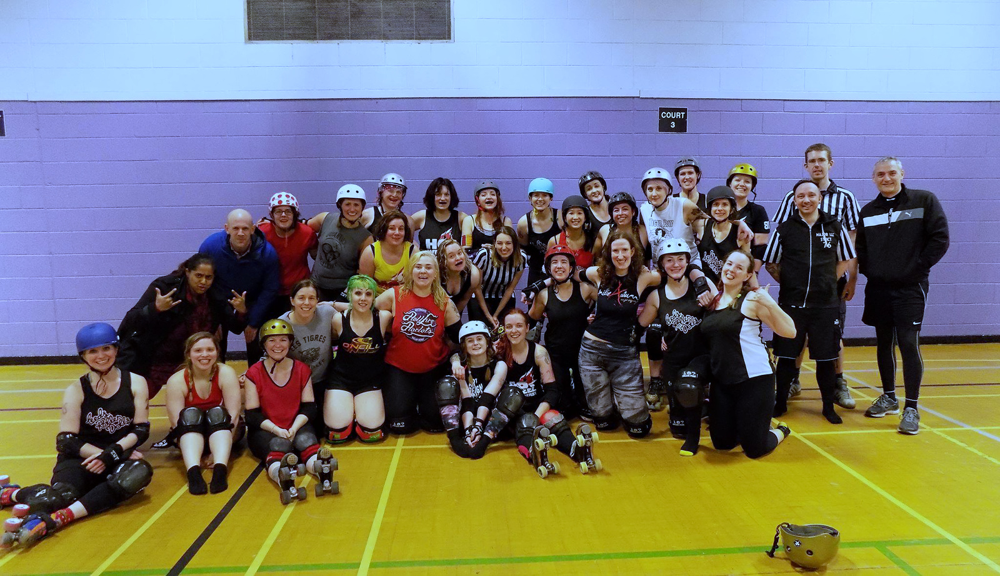

EuroClash Interviews: Leeds Roller Derby
Leeds Roller Derby is, technically, the youngest team attending Newcastle Roller Girls' EuroClash in March, having formed from the merger of Leeds Roller Dolls and Hot Wheel Roller Derby only scant months ago. Whilst Hot Wheel had a lower ranking than Leeds Roller Dolls, we're pretty sure that the new LeedsRD will gain from the breadth of skaters available to it, and would predict that their performance will be at least as good as Leeds Roller Dolls (currently ranked 22nd in Europe by Flat Track Stats). There's certainly a wealth of experience in both teams, as LRD spent much of 2016 in the Tier 1 of British Champs (finishing in the middle of the table), and then in the Mayday Mayhem across in the USA; whilst Hot Wheel, who were just breaking into Europe, debuted at SKOD 2016 in Belgium.
 Leeds Roller Derby don't have a logo, so we're showing you their first practice together instead!
LeedsRD Co-Captains Lana del Slay and Nina answered a few questions for us:
We should start with the big news: Leeds Roller Derby didn't exist as a league until late last year, when Leeds Roller Dolls and Hot Wheel Roller Derby merged. You've published your first combined roster, and there's a good contribution from both leagues - what would you say each league brings to the new collaboration?
Lana del Slay: I think each league brings similar things, that's part of the reason we merged. We have great people who bring a range of experience and knowledge but mainly passion and enthusiasm for the sport.
2016 was a pretty good year for both of your source leagues: Leeds Roller Dolls and Hot Wheel both did exceptionally well in British Champs, but also the Dolls had their second successful trip to the USA in the Mayday Mayhem, and Hot Wheel their first "international" tournament at SKOD2016 [beating their seeding by 4 places!], following the Dolls (who attended in 2014). What were the high points for you over 2016, and will the new Leeds Roller Derby be picking up where Leeds Roller Dolls left off, in terms of International derby?
Lana del Slay: Both those things were high points for sure, but I think we’re all in agreement that the decision to merge is the best thing either team has ever done.
Nina: And that’s our biggest priority right now - focusing on us, Leeds Roller Derby. Our number one goal for the season is becoming a team, which may not sound very ambitious considering where both of us came from in 2016 but we feel it's the best thing for us. This isn’t just about 2017, it’s about the season after that, and the season after that. Once we know our teammates then we can focus on international derby. And there is so much talent in the UK and Europe we are happy to concentrate our efforts this side of the pond for now.
This interview is to help promote EuroClash, which is just one big tournament that LeedsRD is throwing itself into in its first year. How are you preparing for taking on some of the top European teams, and who are you most looking forward to playing?
Nina: Lots of training and getting to know each other! In terms of the teams, we are excited to play both ARRG and Dublin. Each team brings something different. ARRG we haven't played in quite some time so will be a bit of an unknown whereas both LRD and HWRD played DRD 2015/2016 [ed: Leeds Roller Dolls took a win in late 2015, whilst Hot Wheel lost last October] so will be interesting to see how we perform against them as Leeds Roller Derby.
With the schedule as it is, LeedsRD will also have the chance to watch quite a few other games - are there any teams, or matchups between teams, which you're particularly looking forward to?
Nina: Yes! Definitely Bear City and Paris. Newcastle and MMR are always good teams to watch too because their blockers are so physical and hard hitting!
2017 is already a big year for Leeds Roller Derby, but is there anything else coming up in the future for the league?
Lana del Slay: So much is happening in the Leeds Roller Derby camp. We are beavering away putting the final touches to our season outside of the British Champs. We plan to have a few home games over the year where we can hopefully showcase our full league and host games for the A and B team as well as our Junior league. October is going to be a very big month for us. We’re going to be celebrating 10 years of roller derby in Leeds with our rebrand which we’re going to be launching then, and let's not forget the return of the Great Yorkshire Showdown which is also going to be in October.